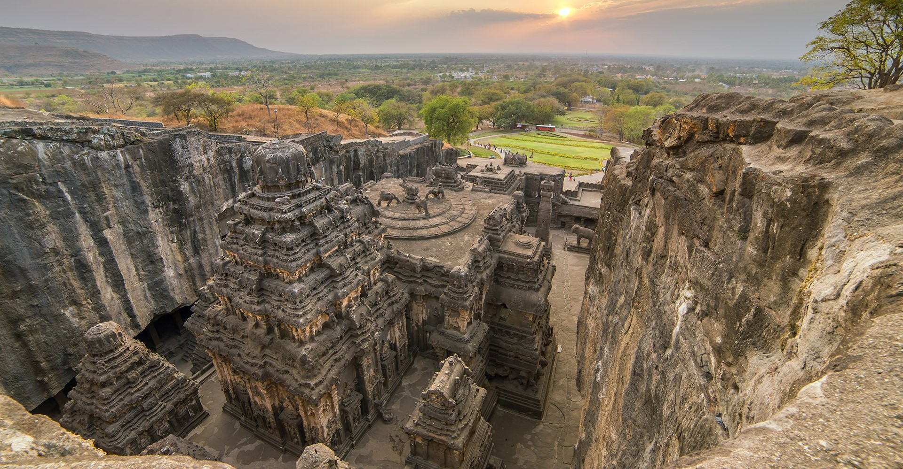
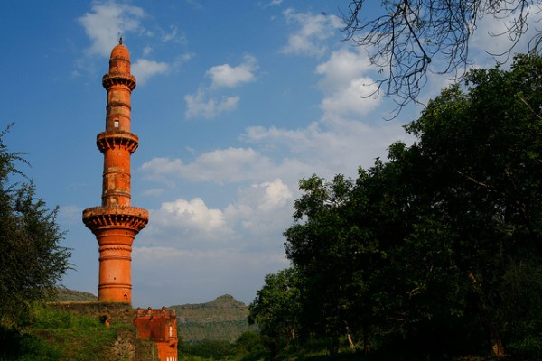
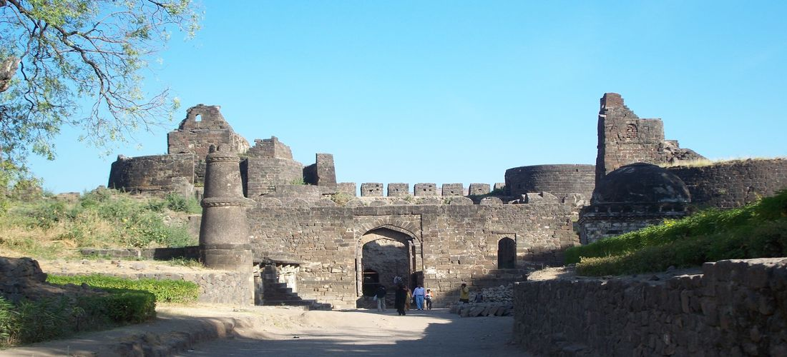
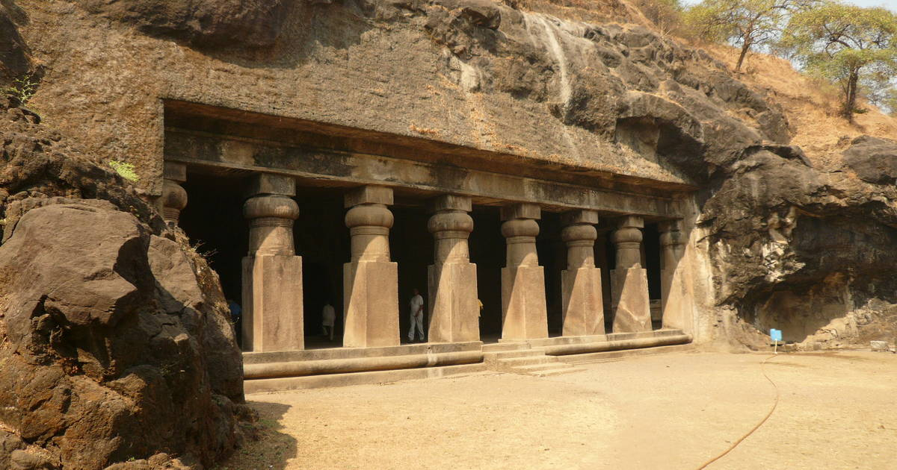

The Gateway of India, with its regal arches, stands guard facing the Arabian Sea at Apollo Bunder in bustling Colaba area of Mumbai. The most popular tourist attraction, it is the unofficial icon of the city of Mumbai and is a reminder of its rich colonial history as Bombay. The first structure to welcome visitors entering the city by sea, it is popularly called ‘Taj Mahal of Mumbai’. It stands at the end of Chhatrapati Shivaji Marg at the water’s edge. Visited by tourists and locals alike, the gateway and its promenade affords a great view of the boat-studded sea and is the connecting point for boat rides to and from the famous Elephanta Caves. The ‘Elephanta Festival of music and dance’ which was earlier held at the Elephanta caves, is now held in front of the Gateway in March every year. It is often confused with the India Gate in Delhi built in the memory of the 82,000 soldiers of the undivided Indian Army who died in the period 1914–21 in the First World War.
2) AJANTA AND ELLORA CAVES Ajanta and Ellora caves, considered to be one of the finest examples of ancient rock-cut caves, are located near Aurangabad in Maharashtra, India. Ajanta and Ellora caves complex is adorned with beautiful sculptures, paintings, and frescoes and include Buddhist monasteries, Hindu and Jain temples. The Ajanta caves are 29 in number and were built between the 2nd century BC and 6th century AD, whereas the Ellora Caves are more spread out and 34 in number and dates to the period between 6th and 11th Century AD.Ajanta and Ellora caves are designated as UNESCO World Heritage Sites and are quite popular among travelers worldwide. Ajanta Caves, located around 99km north of Aurangabad, are mostly Buddhist sites and were used as a retreat by Buddhist Monks. Ellora is just 15 km west of Aurangabad and has a better mix of Hindu, Jain, and Buddhist sites. These hand-carved caves were built and sponsored by the Indian rulers of those periods and almost buried by thick forests. One of the most famous places in the entire Ajanta and Ellora Caves is the Kailash Temple, which is also the single most massive monolithic structure globally. These rock-cut caves containing carvings are some of the best examples of ancient Indian architecture and sculpture.
3) CHAAND MINAAR The Chand Minar or the Tower of the Moon is a medieval tower in Daulatabad, India. The tower is located in the state of Maharashtra near the Daulatabad-Deogiri fort complex. It was erected in 1445 C.E by King Ala-ud-din Bahmani to commemorate his capture of the fort. Chand Minar bears resemblance to the Qutb Minar of Delhi and was inspired from it.The Chand Minar is considered to be among the finest specimens of Indo-Islamic architecture in Southern India. It is 63 metres high and is divided into 4 storeys and 24 chambers. A small mosque or praying hall sits at the base of the tower, which is covered with Persian blue tiles. The Tower also displays some indigenous Indian architectural features such as the brackets supporting its balconies[1] The tower's height makes it visible from every corner of the Daulatabad Fort.[2]
4) DAULATABAD FORT Daulatabad Fort, also known as Devagiri or Deogiri, is a historic fortified citadel located in Devagiri village near Aurangabad, Maharashtra, India. It was the capital of the Yadava dynasty, for a brief time the capital of the Delhi Sultanate, and later a secondary capital of the Ahmadnagar Sultanate.
5) ELEPHANTA CAVES The Elephanta Caves are located in Western India on Elephanta Island (otherwise known as the Island of Gharapuri), which features two hillocks separated by a narrow valley. The small island is dotted with numerous ancient archaeological remains that are the sole testimonies to its rich cultural past. These archaeological remains reveal evidence of occupation from as early as the 2nd century BC. The rock-cut Elephanta Caves were constructed about the mid-5th to 6th centuries AD. The most important among the caves is the great Cave 1, which measures 39 metres from the front entrance to the back. In plan, this cave in the western hill closely resembles Dumar Lena cave at Ellora, in India. The main body of the cave, excluding the porticos on the three open sides and the back aisle, is 27 metres square and is supported by rows of six columns each.